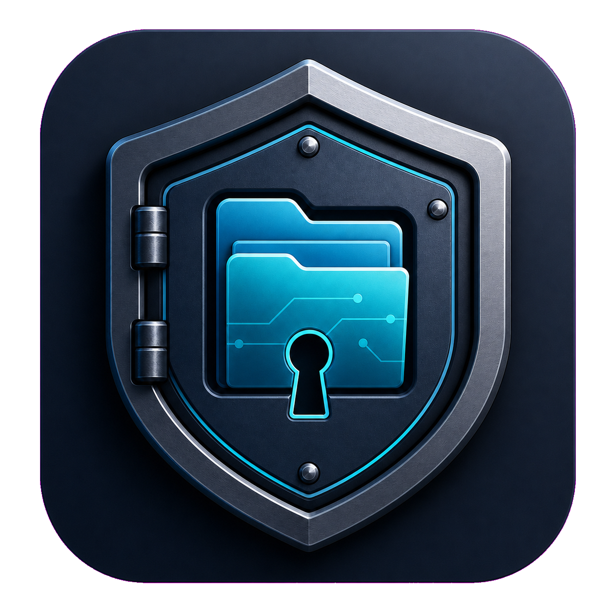

Lokální šifrování
Vytvořte šifrované úložiště chráněné hlavním heslem přímo ve Windows.
Aplikace pro Windows
QuietSafe pomáhá organizovat a lokálně šifrovat vybrané dokumenty, fotografie, videa, audio, archivy a další soubory pomocí hlavního hesla.

Co QuietSafe umí
Praktické nástroje pro lokální práci se soubory bez nutnosti ukládat jejich obsah do služby vydavatele.
Vytvořte šifrované úložiště chráněné hlavním heslem přímo ve Windows.
Přidávejte podporované dokumenty, fotografie, videa, audio i archivy.
Prohlížejte podporované typy souborů a přehrávejte média uvnitř aplikace.
Vybrané soubory můžete exportovat, když je potřebujete použít mimo QuietSafe.
Pro práci s lokálním obsahem není nutný účet u vydavatele ani cloudové úložiště QuietSafe.
Aplikace je dostupná prostřednictvím Microsoft Storu pro zařízení se systémem Windows.
Jednoduchý postup
Otevřete oficiální stránku aplikace v Microsoft Storu a dokončete instalaci.
Zvolte umístění a nastavte hlavní heslo, které budete bezpečně uchovávat.
Importujte a organizujte podporované typy souborů podle svých potřeb.
Důležité před použitím
QuietBit Studio neposkytuje obnovu hlavního hesla. Pokud heslo ztratíte, šifrovaná data mohou být neobnovitelná.
Připraveno pro Windows
Stáhněte aplikaci z její oficiální stránky v Microsoft Storu.